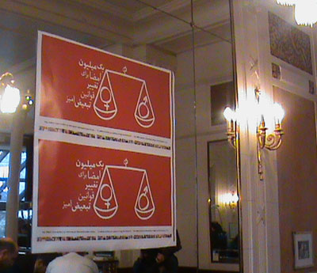
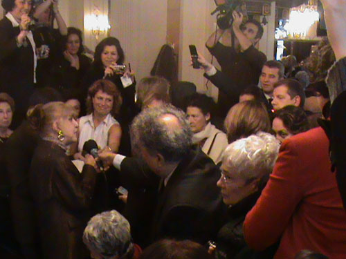
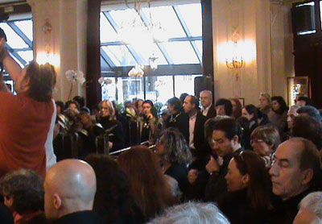
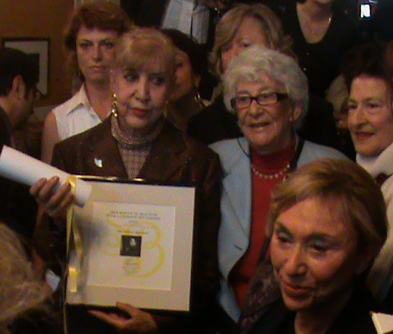

|
|
جایزه سیمون دوبووار برای کمپین را سیمین بهبهانی دریافت کرد
چهار شنبه2 بهمن 1387


تغییر برای برابری - براساس اخبار رسیده از پاریس مراسم اهدای جایزه سیمون دوبووار امروز 21 ژلنویه 2009 در پاریس کافه بسیار عالی برگزار شد.

در این مراسم سیمین یهبهانی شاعر بزرگ ایران و حامی جنبش زنان شرکت داشت و جایزه سیمون دوبووار را ار سوی اعضای کمپین یک میلیون امضا دریافت کرد.

دراین مراسم همچنین ژولیا کریستوا ، دختر خوانده سیمون دوبووار، وزیر فرهنگ فرانسه ، رئیس اتحادیه بین المللی حقوق زنان قرانسه و ...حضور داشتند و سخناانی ایراد کردند.
اعضای کمپین پاریس در این مراسم بیانیه کمپین یک میلیون امضا را که به فرانسه ترجمه کرده بودند درمیان حضار پخش کردند و از همه اعضای هیئت ژوری و وزیر فرهنگ فرانسه امضای حمایتی کمپین را گرفتند. مشروح این گزارش و تصاویر دیگر به زودی منتشر می شود .
تصاویر ارائه شده از این مراسم را آقای حمید حمیدی که در مراسم بودند برای سایت تغییر برای برابری ارسال کرده اند که سپاسگزار ایشان هستیم.
اخبار مرتبط:
کمپین پاریس / گزارش تصویری از مراسم اهدای جایزه سیمون دوبووار به سیمین بهبهانی برای کمپین یک ملیون امضا در کافه دومگوی پاریس
رادیو زمانه- جایزه ای برای تمام زنان ایرانی
رادیو فردا- جايزه «سيمون دوبووار» را سيمين بهبهانی گرفت
رادیو فرانسه - مراسم اهدای جایزۀ سیمون دوبووار به سیمین بهبهانی
دویچه وله- کمپین یک میلیون امضا جایزه نقدی بنیاد سیمون دوبوار را به این بنیاد اهدا کرد
رادیو فردا- سیمین بهبهانی جایزه سیمون دوبووار را در پاریس دریافت کرد
روز آنلاین - جایزه بین المللی برای زنان کمپین
رادیو زمانه -دریافت جایزه دوبووار از سوی سیمین بهبهانی
کانون زنان ایرانی - کمپین یک میلیون امضا جایزه نقدی بنیاد سیمون دوبوار را به این بنیاد اهدا کرد
مدرسه فمینیستی - گزارش تصویری از مراسم اهدای جایزه سیمون دوبووار و بازتاب این مراسم در رسانه ها